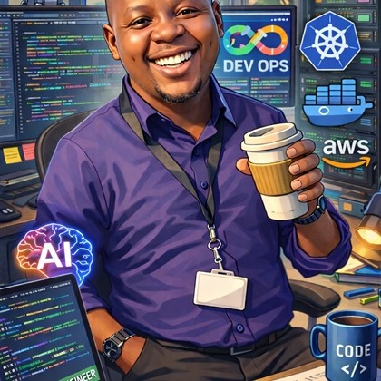

Backend
Java · Spring Boot · Maven · JPA · REST APIs · Microservices
JAVA • FULL-STACK • CLOUD • AI
Full-stack developer focused on Java, Spring Boot, Angular, cloud-native engineering, DevOps and AI-powered applications.
public class Developer {
String focus = "Full-Stack";
String backend = "Java + Spring";
String frontend = "Angular";
String cloud = "AWS + Azure";
String mindset = "Build. Learn. Improve.";
void create() {
solveProblems();
shipProducts();
}
}I’m a software developer who enjoys turning ideas into practical, scalable applications. My core strength is connecting backend engineering, frontend experiences and infrastructure into one complete solution.
I’ve worked with microservices, APIs, databases, Docker, Kubernetes, CI/CD and modern cloud platforms — while continuously exploring how AI can make software more intelligent and useful.

I’m a Junior Java Full-Stack Software Engineer based in Johannesburg, with an Information Technology background from Vaal University of Technology.
My journey has taken me from cloud foundations and full-stack development into enterprise software engineering, microservices, DevOps and AI. I’m motivated by learning through building and by solving problems that have real-world value.
A practical stack across application development, infrastructure and AI.
Java · Spring Boot · Maven · JPA · REST APIs · Microservices
Angular · React · JavaScript · HTML · CSS · Tailwind · Bootstrap
PostgreSQL · MySQL · SQL · Flyway · Data Warehousing · OLAP
Docker · Kubernetes · Helm · Jenkins · GitHub Actions · AWS · Azure
Prometheus · Grafana · SonarQube · Spring Boot Actuator
Spring AI · LLMs · RAG · Vector Databases · MCP · AI Agents
A simulated trading platform combining market data, predictive analysis, automated trading bots, virtual credits and a modern dashboard.
A web app where users can save job applications and use an AI Assistant for advice on improving a resume for a specific job description.
A personal portfolio created to showcase my development skills, projects and technology journey.
A new project in the portfolio. Project details and technology stack can be expanded as the product develops.
An evolving agentic-AI concept using Spring AI, MCP, RAG and vector search to assist developers with software engineering tasks.
Develop and maintain Java/Spring Boot backend services, Angular frontend components and MySQL integrations. Work with Docker, Kubernetes, SonarQube, Agile/Scrum and Jira, while contributing to production defect resolution and AI-assisted development workflows.
Contributed to the AlgoBot Trading Platform using Java and Spring Boot, built an Angular trading dashboard, supported Jenkins CI/CD pipelines and containerized applications with Docker.
Built foundational cloud knowledge across Azure, cloud service models, security, governance and scalable resource deployment, and earned Microsoft Certified: Azure Fundamentals (AZ-900).
I’m interested in opportunities where I can contribute as a Java full-stack developer, grow with strong engineering teams and work on meaningful software.
07 / CONTACT
Whether it’s a software project, collaboration or an opportunity, I’d love to hear from you.
Before deploying: replace the email, GitHub and LinkedIn links in index.html.